🔵 ВКонтакте
Защитите аккаунт за 7 шагов
Следуйте инструкции. На каждом шаге — текст и скриншоты.
1
Шаг 1 из 7
Установите надёжный пароль
Вам нужно создать сложный пароль, который невозможно подобрать.
Совет
Научиться составлять сложный пароль можно во вкладке Тестер пароля.
→ Настройки → Безопасность и вход → Пароль → Изменить пароль
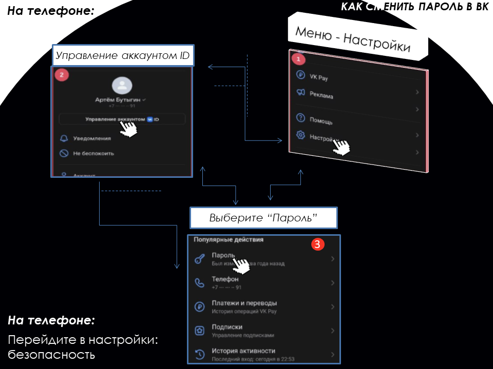
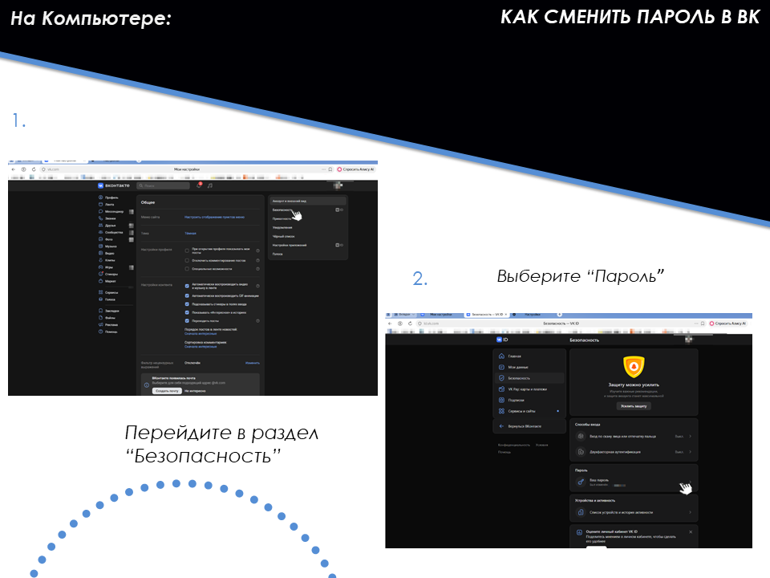
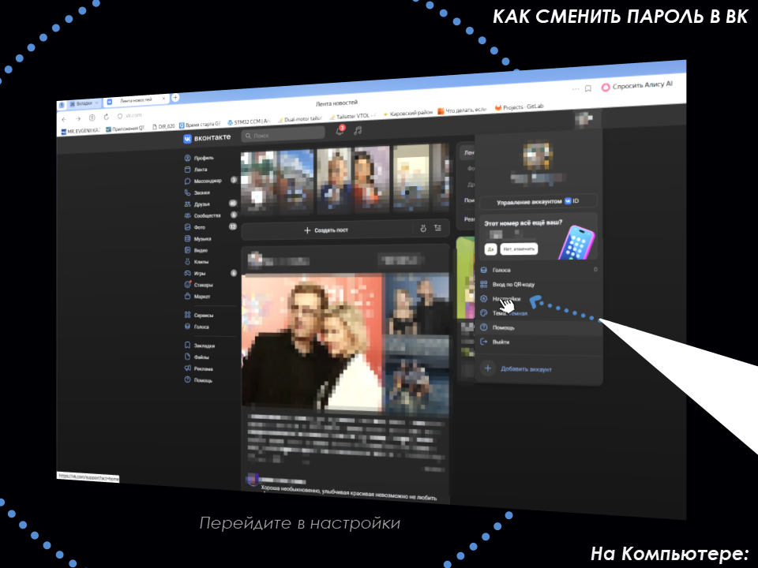
2
Шаг 2 из 7
Включите двухфакторную аутентификацию (2FA)
Это добавит вторую защиту. Даже если узнают пароль, без кода не войдут.
→ Настройки → Безопасность и вход → Двухфакторная аутентификация
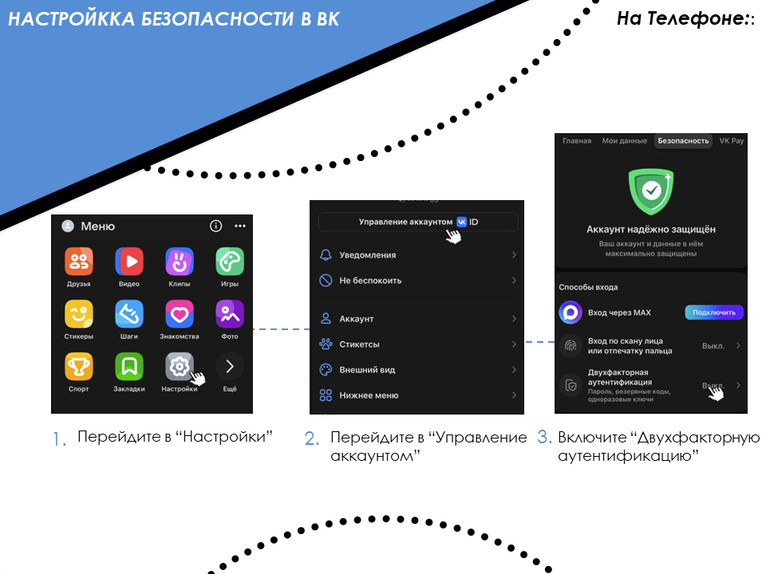
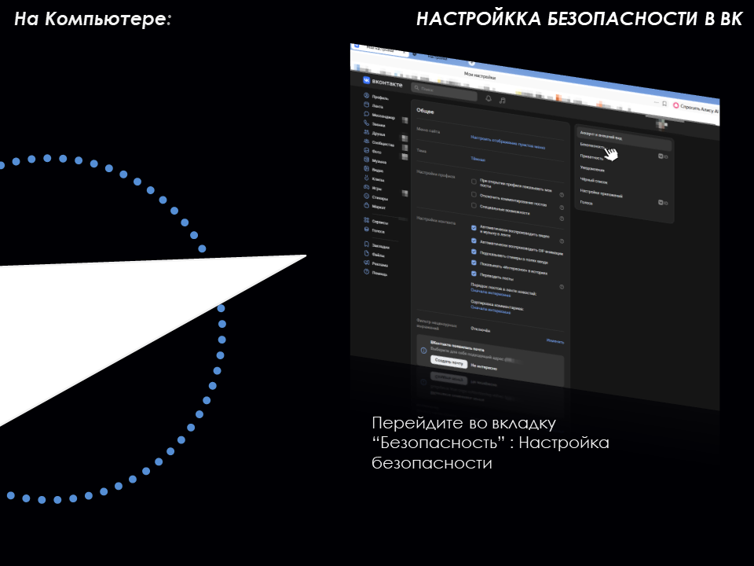
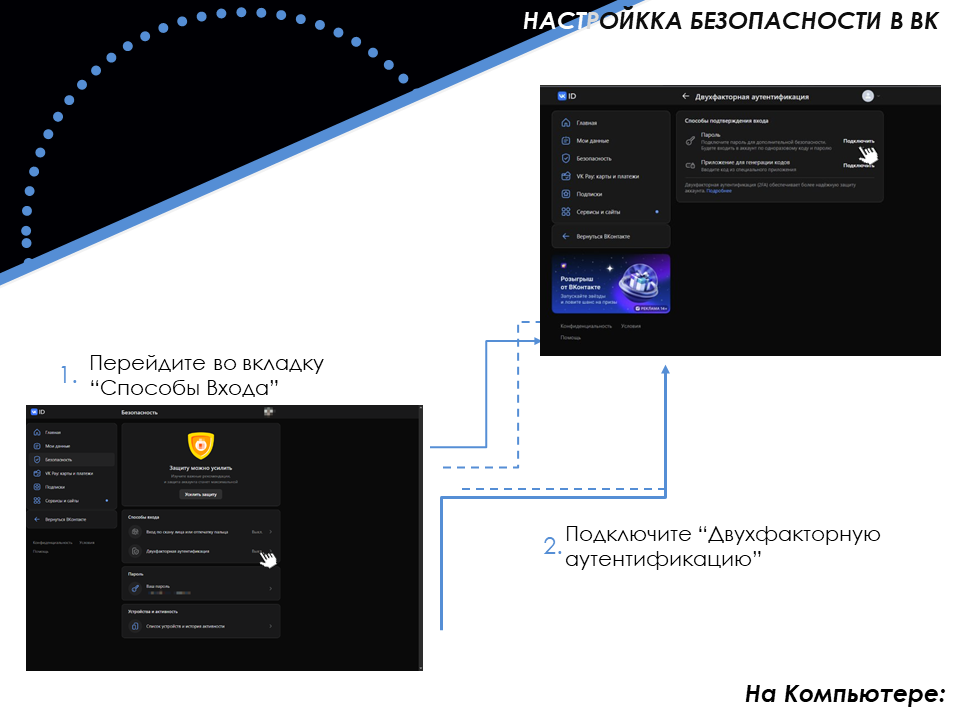
3
Шаг 3 из 7
Настройте приватность
Скройте личную информацию от незнакомцев.
→ Настройки → Приватность
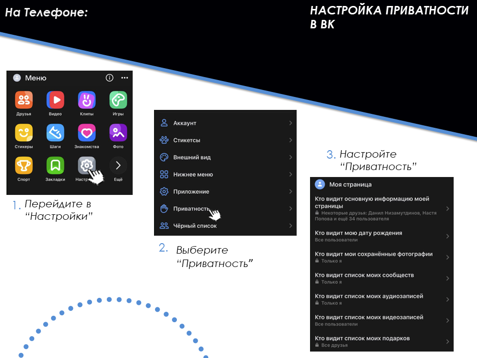
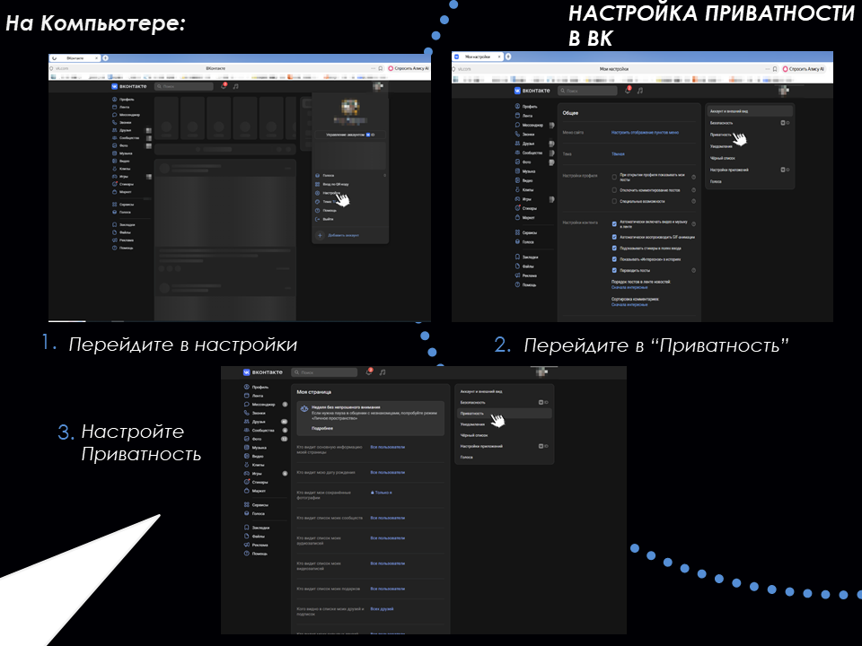
4
Шаг 4 из 7
Проверьте активные сессии
Посмотрите, не зашел ли кто-то в ваш аккаунт с другого устройства.
→ Настройки → Безопасность → История входов → Завершить все другие сессии
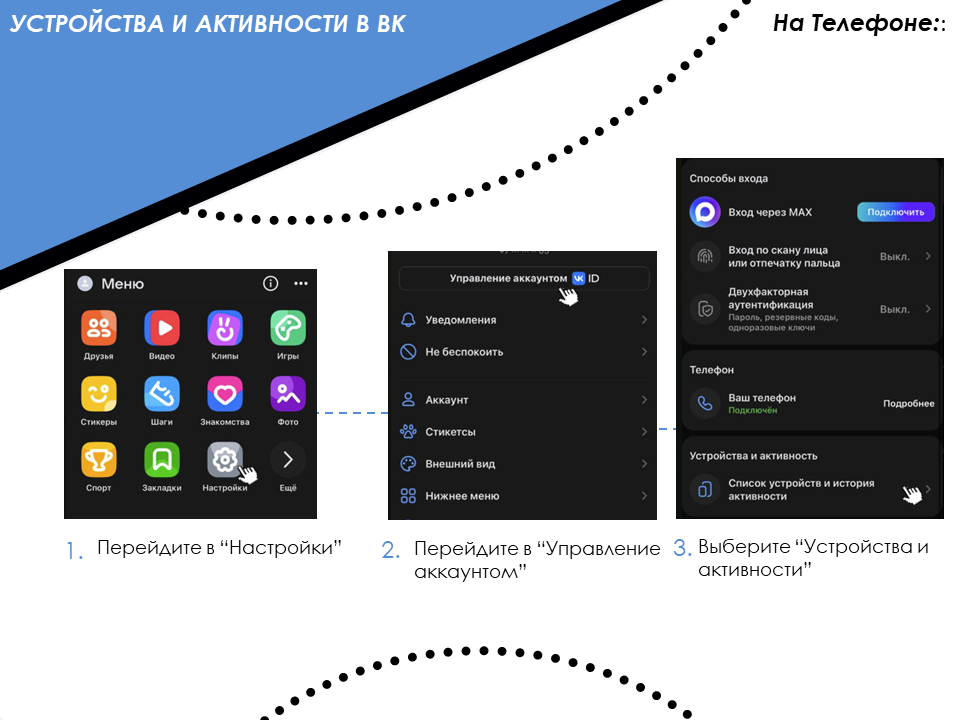
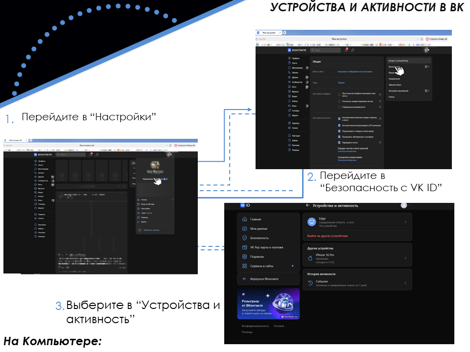
5
Шаг 5 из 7
Удалите лишние приложения
Удалите доступ у всего, чем не пользуетесь.
→ Настройки → Безопасность → Сервисы и сайты
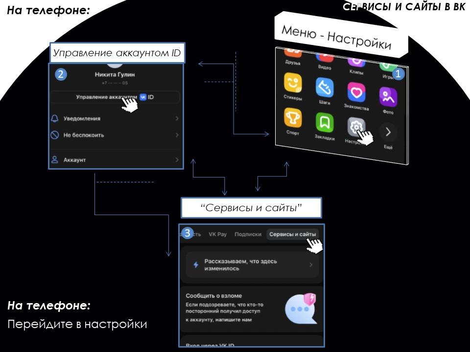
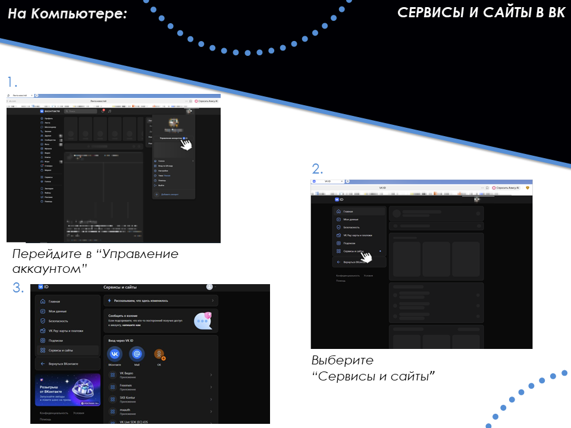
6
Шаг 6 из 7
Убедитесь в безопасности
Убедитесь, что Вконтакте считает ваш аккаунт защищенным.
→ Настройки → Безопасность
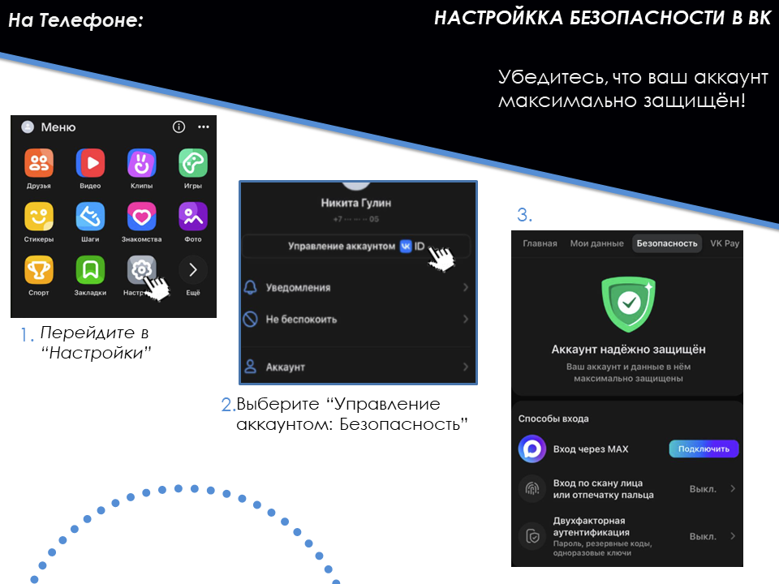
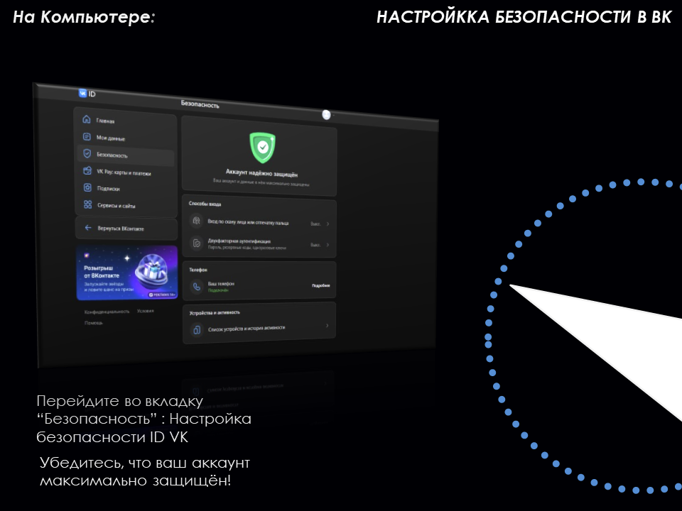
7
Шаг 7 из 7
Защита от фишинга
Не переходите по подозрительным ссылкам из ЛС.
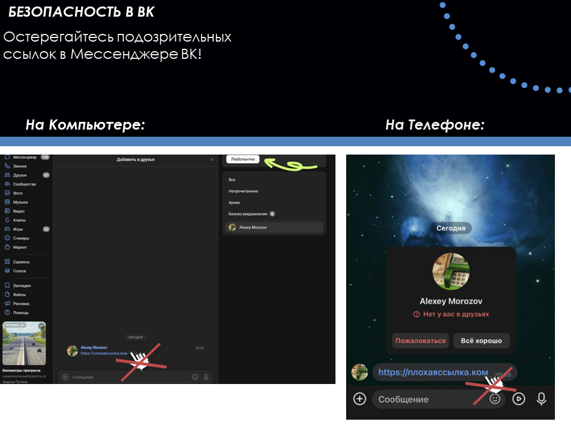